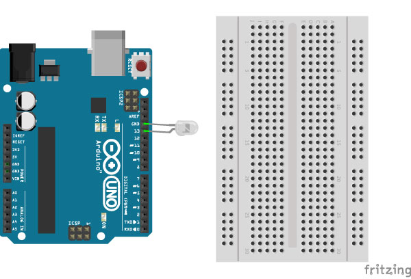
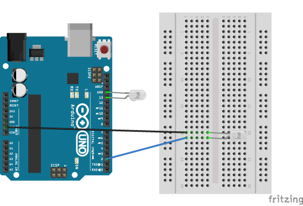
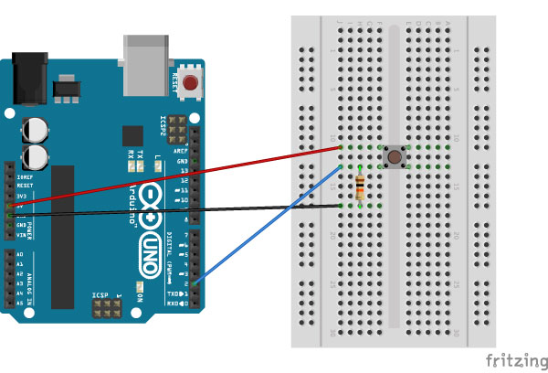
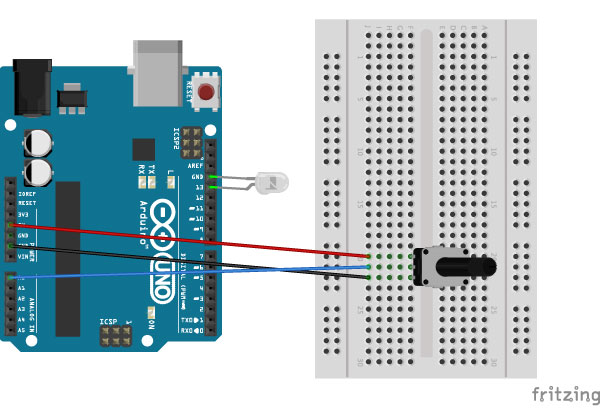
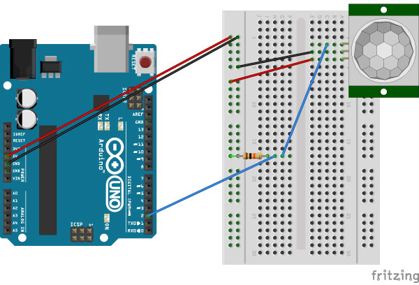

Blink
In the Arduino program open File / Examples / 01.Basics / Blink
Blink 2
Addition of a second L.E.D. to Blink sketch.
Button
In the Arduino program open File / Examples / 02.Digital / Button
Potentiometer
In the Arduino program open File / Examples / 03.Analog / AnalogInput
PIR Sensor in Processing
In the Arduino program open File / Examples / Firmata / StandardFirmata and load that on to your Arduino.
Download the Firmata library for Processing.
Unzip the file and place the entire unzipped folder in your Processing libraries folder, by default it's at Documents / Processing / libraries
Note: you have to restart Processing after you install a new library.